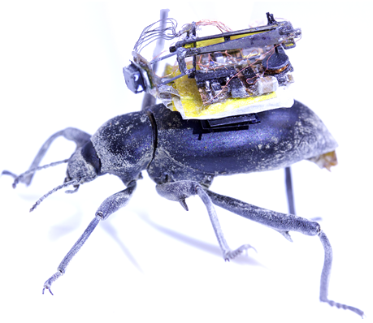
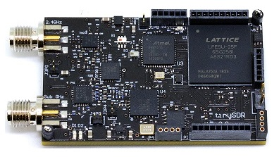
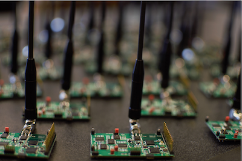
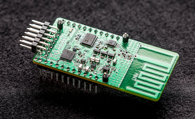
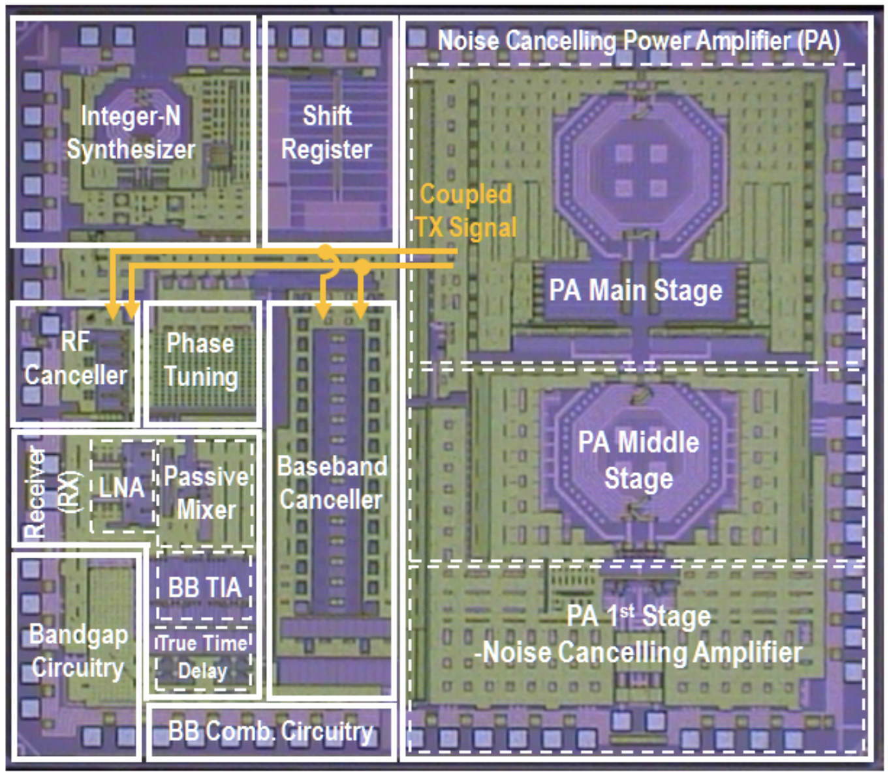
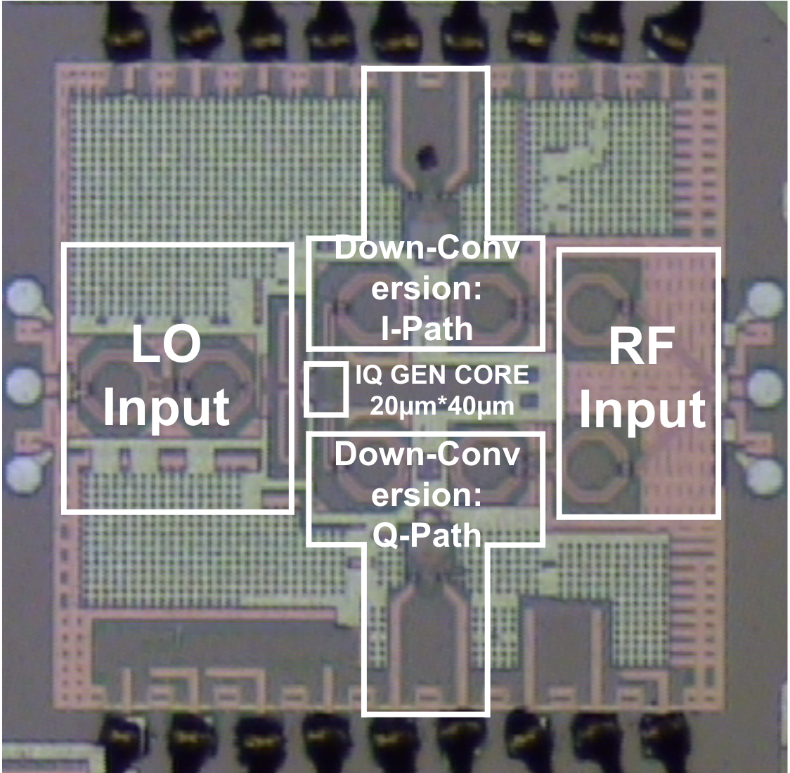
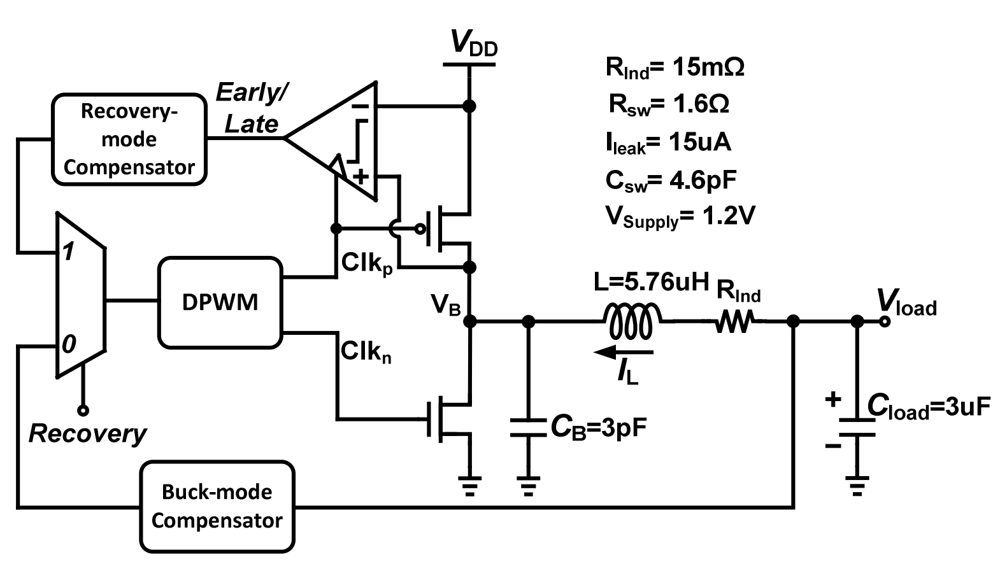
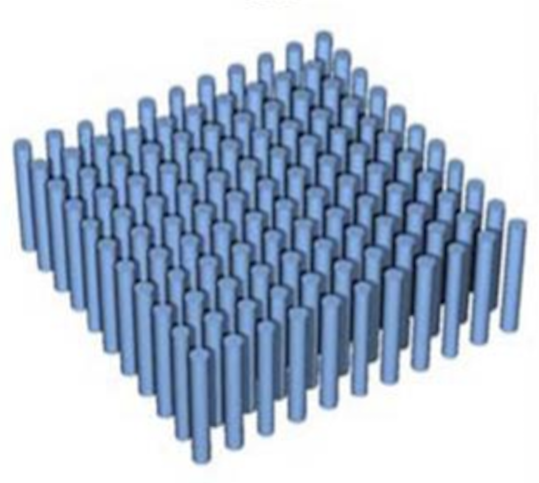

Ali Najafi
I am a Ph.D. candidate working with Shyam Gollakota in the Networks and Mobile Systems Lab. I build low-power wireless networks, devices and sensing systems for Internet of Things and Mobile Health applications. I am also experienced in analog/mixed-signal/RF IC design. My skillset in embedded system prototyping and integration, signal processing, sensing, integrated circuit design, machine learning and deep understanding of applied physics enables me to tackle challenging new applications. I previously interned at Qualcomm (2016), Apple (2017) and Jeeva Wireless (2018).
Before coming to UW, I did my bachelors in Sharif University of Technology, Iran working on gyro-magnetic photonic crystals with Sina Khorasani. I did my masters in the same department where I worked with Mehrdad Sharif-Bakhtiar on low power RFID tags for wireless remote sensing applications.
|
|
Measuring Middle Ear Function Using a Smartphone-based Tympanometer
Ali Najafi*, Justin Chan*, Shyam Gollakota In preparation |
|

|
Wireless steerable vision for live insects and insect-scale robots
Ali Najafi*, Vikram Iyer*, Johannes James, Sawyer Fuller, Shyam Gollakota Science Robotics - July 2020 [Paper/a>] |
|

|
TinySDR: Low-Power SDR Platform for Over-the-Air Programmable IoT Testbeds
Ali Najafi*, Mehrdad Hessar*, Vikram Iyer, Shyam Gollakota USENIX Symposium on Networked Systems Design and Implementation (NSDI) - February 2020 [Pre-print] MobiCom - October 2019 [Demo] |
|

|
NetScatter: Enabling Large-Scale Backscatter Networks
Ali Najafi*, Mehrdad Hessar* , Shyam Gollakota USENIX Symposium on Networked Systems Design and Implementation (NSDI) - February 2019 [Paper][Slides] |
|

|
LoRa Backscatter: Enabling The Vision of Ubiquitous Connectivity
Vamsi Talla, Mehrdad Hessar, Bryce Kellogg, Ali Najafi, Joshua R. Smith, Shyamnath Gollakota Interactive, Mobile, Wearable and Ubiquitous Technologies (IMWUT) - September 2017 [Paper][Slides][Video][Webpage] Press: Economist, IEEE Spectrum, Tech Review Distinguished Paper Award |
|

|
Wideband Dual-Injection Path Self-Interference Cancellation Architecture for Full-Duplex Transceivers
Tong Zhang, Chenxin Su, Ali Najafi, Jacques C. Rudell IEEE Journal of Solid-State Circuits (JSSC) - June 2018 [Paper] |
|
|
A 1.7-to-2.2GHz full-duplex transceiver system with >50dB self-interference cancellation over 42MHz bandwidth
Tong Zhang, Ali Najafi, Chenxin Su, Jacques C. Rudell IEEE International Solid-States Circuits Conference (ISSCC) - February 2017 [Paper] |
|

|
A Precision Wideband Quadrature Generation Technique With Feedback Control for Millimeter-Wave Communication Systems
Tong Zhang, Ali Najafi, Mazi Taghivand, Jacques C. Rudell IEEE Transactions on Microwave Thoery and Techniques (MTT) - January 2018 [Paper] |
|

|
Regenerative Breaking: Recovering Stored Energy from
Inactive Voltage Domains for Energy-efficient Systems-on Chip
Ali Najafi, Jacques C. Rudell, Visvesh Sathe ACM/IEEE International Symposium on Low Power Electronics and Design (ISLPED) - August 2018 [Paper] |
|

|
Analyzing symmetry in photonic band structure of gyro-magnetic photonic crystals
Ali Najafi, Sina Khorasani, Faezeh Gholami SPIE NanoScience + Engineering - August 2011 [Paper] |